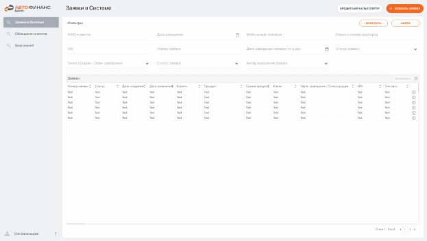
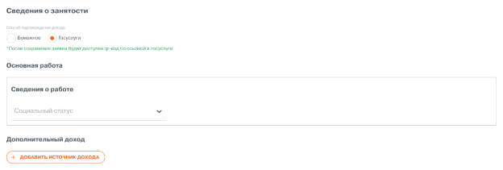
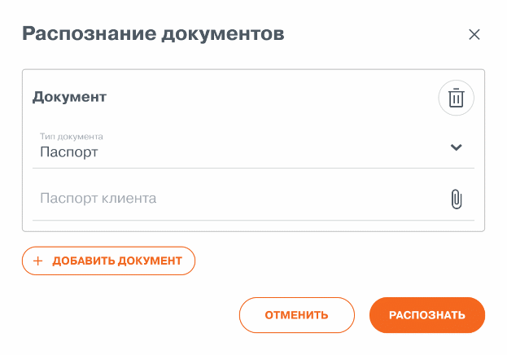
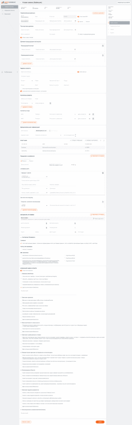

Функциональные требования
Новый кредитный интерфейс на базе конструктора приложений FIS Platform
Раздел 4 «Заведение заявки на кредит»
2026
Содержание
Термины, определения и сокращения 3
4.2. Меню «Заявки в системе» 6
4.4. Требования к формированию печатных форм документов 39
4.5. Общие действия в карточке Универсальной заявки 43
Приложение 1. Критерии визуальной оценки клиента 43
Приложение 2. Согласия/Проверки 45
Дата |
Авторы |
Версия |
Изменения/Причины |
10.06.2026 |
Соболева А. |
v1.0 |
Первая версия документа |
22.06.2026 |
Соболева А. |
v2.0 |
|
Сокращение |
Полное наименование |
Банк |
Банк (заказчик) |
Конструктор |
Конструктор приложений FIS Platform |
НКИ |
Новый кредитный интерфейс (FIS) |
Значения полей на экранных формах (при наличии) указаны для примера, и не отражают реальные данные.
Во всех требованиях ниже по тексту приоритетное значение имеет текстовое описание (представленное в файле маппинга) формы, фильтров, полей и т.д., а не их макет. При различиях считать верным описание в текстовом описании.
Расположение полей в реализованном решении может отличаться от расположения полей на макетах экранных форм в текущем документе: изменение расположения полей согласовывается с бизнес-пользователями в рамках разработки.
Каждая табличная часть формы имеет возможность настройки отображения колонок по требованию пользователя, в заранее определенном диапазоне (диапазон колонок соответствует данным, хранимым в таблице).
Ограничения по типам данных:
Тип данных |
Ограничения |
Текст (string) |
Допустимое количество символов: 2000 |
Длинный текст (text) |
Максимальный размер значения: ~2GB |
Целое число (integer) |
Любые целые числа в диапазоне ± 2147483648 |
Дробное число (float) |
Любые дробные (десятичные) числа в диапазоне ± 2147483648. Максимальное количество знаков поле запятой - 16 |
Дата (date) |
Дата в формате дд.мм.гггг. При этом принимаются значения: •для года - целые положительные числа от 1900 до 9999; •для месяца - целые числа в диапазоне от 01 до 12; •для дня - целые числа в диапазоне от 01 до 28/29/30/31 (в зависимости от выбранного месяца) При сохранении данных в поле "Дата" НЕ происходит сдвиг данной даты по часовому поясу сервера базы данных относительно часового пояса пользователя - в базу данных сохраняется дата, указанная пользователем или системой. |
Дата и время (datetime) |
Дата и время в формате дд.мм.гггг чч:мм:cc. При этом принимаются значения: •для года - целые положительные числа от 1900 до 9999; •для месяца - целые числа в диапазоне от 01 до 12; •для дня - целые числа в диапазоне от 01 до 28/29/30/31 (в зависимости от выбранного месяца); •для часов - целые числа от 00 до 23; •для минут - целые числа от 00 до 59; •для секунд - целые числа от 00 до 59. Максимальное значение допустимое к вводу пользователем - 23:59:59. При попытке ввода большего значения система не позволит сохранить введенное значение. Если в поле в формате DATETIME частично указать значение (только дату или только время), то введенное значение будет интерпретироваться как NULL). Операционные системы серверов системы СИСТЕМЕ и базы данных, будут настроены на часовой пояс GMT+3 (Москва). При сохранении данных с поля «Дата и время» пользователем в интерфейсе, происходит сдвиг данной даты по часовому поясу операционной системы базы данных относительно часового пояса пользователя, т.е. в базу данных сохраняется дата и время по часовому поясу GMT+3 (Москва). Система СИСТЕМЕ не допускает возможности настройки поля на экране для работы с типом данных «Дата», если его значение требуется сохранить в поле источника данных системы СИСТЕМЕ, которое имеет тип данных «Дата и время». |
Двоичные данные (binary) |
Любые данные содержимого файлов |
Список |
Значения из справочника. Возможен выбор только одного значения |
Список с множественным выбором |
Значения из справочника. Возможен выбор нескольких значения |
Логическое значение (boolean) / Логическое значение /Чек-бокс |
Y / N; Да / Нет ; True / False Поля типа BOOLEAN на уровне хранения информации могут принимать значения true, false, null, но при внесении информации пользователем через виджет могут быть добавлены только 2 значения - true или false. |
По умолчанию значения в виджетах отсутствуют и интерпретируются как NULL
Основное описание интерфейсных виджетов FIS Platform, их функциональных возможностей и ограничений приведены в документе «Описание базовых возможностей интерфейсных виджетов FIS Platform» (может быть предоставлено отдельно по запросу)
Бизнес-справочники и системные справочники, необходимые для работы функционала, описанного в данном документе, должны быть наполнены корректными значениями и присутствовать в Системе для проведения опытной эксплуатации, а также корректного функционирования Системы при старте промышленной эксплуатации. Дальнейшее сопровождение справочников осуществляется заказчиком самостоятельно.
В текущем ФТ описаны разделы меню:
Заявки в системе
В меню «Заявки в системе» осуществляется поиск заявки.
Требования к поиску:
Поиск выполняется по одному полю и по комбинации полей.
Поиск регистронезависимый; для текстовых полей — по подстроке.
Видимость заявок ограничивается ролевой моделью.
В результатах отображаются найденные заявки.
В случае, если не найдено ни одной заявки, то отображается подсказка «Не найдено ни одного результата».
При первичной загрузке формы/очистке фильтров, в системе должны отображаться все активные заявки, у которых автор = текущий пользователь

Название |
О |
Р |
Тип значения |
Примечание |
Фамилия клиента |
Нет |
Да |
Поле ввода Текст. Строка |
|
Имя клиента |
Нет |
Да |
Поле ввода Текст. |
|
Отчество клиента |
Нет |
Да |
Строка |
|
Дата рождения |
Нет |
Да |
Поле ввода Дата |
|
Мобильный телефон |
Нет |
Да |
Поле ввода Текст. Строка |
|
Серия паспорта |
Нет |
Да |
Поле ввода Текст. Строка |
|
Номер паспорта |
Нет |
Да |
Поле ввода Текст. Строка |
|
VIN |
Нет |
Да |
Поле ввода Текст. Строка |
|
Номер заявки |
Нет |
Да |
Поле ввода Текст. Строка |
|
Дата заведения заявки |
Нет |
Да |
Поле ввода Дата |
|
Статус заявки |
Нет |
Да |
Раскрывающийся список с множественным выбором. Значения справочника «Статус заявки» |
|
Точка продаж / Офис заведения |
Нет |
Да |
Раскрывающийся список с множественным выбором. Значения справочника «Точка продаж» |
|
Автор заведения заявки |
Нет |
Да |
Список |
|
Сортировка по умолчанию в таблице «Заявки»: по дате заведения заявки по убыванию от большей даты к меньшей (от текущей даты к «прошлым» датам).
Наименование |
Р |
Тип значения |
Примечание |
Номер заявки |
Нет |
Строка |
|
Статус заявки |
Нет |
Значение справочника |
По справочнику статусов заявки. Описание справочника будет приведено в ФТ 2 «Общие требования» |
Дата создания |
Нет |
Дата |
|
Клиент |
Нет |
Строка |
ФИО клиента |
Дата рождения клиента |
Нет |
Дата |
|
Мобильный телефон клиента |
Нет |
Строка |
|
Серия и номер паспорта клиента |
Нет |
Строка |
|
ID клиента |
Нет |
Строка/ID |
Присваивается значение ID АБС после отправки запроса на поиск клиента в АБС. |
Продукт |
Нет |
Значение из продуктового каталога |
Наименование программы кредитования (поле «Маркетинговое наименование» из продуктового каталога) |
Офис заведения / Точка продаж |
Нет |
Значение справочника «Точка продаж» |
|
VIN |
Нет |
Строка |
|
ФИО КМ / Автор заведения |
Нет |
Строка/ID |
Пользователь, к которому привязана заявка (согласно BSR 28, BSR 33 и BSR 34) |
Валидации и системные сообщения:
Некорректный формат телефона — «Некорректный формат телефона».
Некорректный формат паспорта — «Укажите серию и номер паспорта в формате 4 и 6 цифр».
Некорректный VIN — «VIN должен содержать 17 символов».
Ничего не найдено — «Не найдено ни одного результата».
Ошибка поиска/интеграции — «Поиск временно недоступен. Повторите попытку позже».
Привязка заявки к кредитному менеджеру возможна 2-мя способами:
При заведении заявки на кредит (при нажатии на кнопку «Создать заявку»)
При нажатии кнопки «Продолжить» (согласно BSR 28)
Ежедневно после окончания рабочего дня (в 00:01) привязка заявки к кредитному менеджеру должна обнуляться (поле ФИО КМ / Автор заведения должно очищаться)



Требования к заголовку карточки задачи:
При создании новой заявки текст заголовка: Новая заявка (Заемщик).
При редактировании заявки текст заголовка: Заявка №номер заявки
Примечания:
Если адрес клиента (регистрации / места жительства) заполнен посредством запроса DaData, то он раскладывается по полям в блоке для ручного ввода, в модели данных должно заполняться поле kladr (код КЛАДР).
Если организация найдена посредством запроса DaData, выбор её из списка предзаполняет поля Анкеты:
Статус организации;
Наименование организации;
Организационно-правовая форма работодателя;
ИНН организации;
ОПФ;
Адрес.
Кнопка |
Бизнес-потребность |
Действие |
Описание |
«Далее»
|
Перейти к следующему этапу |
Нажатие
|
|
Вернуть в общий список |
Возврат заявки в общий список |
Нажатие |
|
Шаблон заявлении-анкета Клиента на получение потребительского кредита, который формируется автоматически на основании данных о Клиенте из Системы:
№ |
Название |
Шаблон |
|
|
Заявление-анкета на получение потребительского кредита |
|
Шаблон должен быть привязан к типу, который собран на основе тэгов из таблицы ниже. Шаблон должен быть настроен на основе этого типа, тэги в шаблоне должны называться также, как и в таблице (по столбцу «Тег»).
Описание тэгов к шаблону документа «Заявление-анкета Клиента на получение потребительского кредита»:
№ |
Тег |
Описание |
Краткое описание |
|
Блок «Параметры о кредите» |
||
|
|
<auto> |
Автомобиль |
Автомобиль |
|
|
<loan_amount> |
Сумма |
Сумма кредита |
|
|
<monthly_payment> |
Ежемесячный платеж |
Ежемесячный платеж |
|
|
<Loan term> |
Срок кредита |
Срок кредита |
|
Блок «Персональные данные заявителя» |
||
|
|
<last_name> |
Фамилия |
Фамилия Клиента |
|
|
<first_name> |
Имя |
Имя Клиента |
|
|
<middle_name> |
Отчество |
Отчество Клиента |
|
|
<previous_last_name> |
Прежняя фамилия |
Прежняя фамилия. Доступна, если признак «Клиент менял ФИО» = «Да» |
|
|
<previous_first_name> |
Прежнее имя |
Прежнее имя. Доступна, если признак «Клиент менял ФИО» = «Да» |
|
|
<previous_middle_name> |
Прежнее отчество |
Прежняя фамилия. Доступна, если признак «Клиент менял ФИО» = «Да» |
|
|
<snils> |
СНИЛС |
СНИЛС |
|
|
<code_word> |
Кодовое слово |
Кодовое слово |
|
|
<inn> |
ИНН |
ИНН |
|
|
<serial_number> |
Серия |
Серия паспорта |
|
|
<number> |
Номер |
Номер паспорта |
|
|
<issue_date> |
Дата выдачи дд.мм.гггг |
Дата выдачи паспорта |
|
|
<issue_place> |
Наименование органа, выдавшего паспорт |
Поле «Кем выдан» из блока «Паспортные данные» |
|
|
|
Зарегистрированный брак |
Если в блоке «Дополнительная информация» в поле «Семейное положение» выбрано «женат/замужем», то чек-бокс – «Да», иначе – «Нет» |
|
|
<dependency> |
Число иждивенцев |
Число лиц на иждивении |
|
|
|
Социальный статус |
Если в блоке «Дополнительная информация» в поле «Социальный статус» выбрано:
|
|
Блок «Адрес фактического проживания» |
||
|
|
|
Совпадение с адресом регистрации |
Если «Адрес фактического места жительства совпадает с адресом регистрации» = «Да», то чек-бокс «Совпадает с адресом постоянной регистрации» - «Да», иначе – «Нет» |
|
|
<region_with_type> |
Регион |
Область, республика, край |
|
|
<city_district> |
Район |
Район |
|
|
<city> |
Город |
Город, населенный пункт |
|
|
<street> |
Улица |
Улица |
|
|
<house> |
Дом |
Дом |
|
|
<block> |
Корпус |
Корпус |
|
|
<str> |
Строение |
Строение |
|
|
<flat> |
Квартира |
Квартира |
|
Блок «Контактная информация» |
||
|
|
<mobile_phone> |
Мобильный телефон |
Мобильный телефон |
|
|
<email> |
Электронная почта |
|
|
|
<work_phone> |
Рабочий телефон |
Рабочий телефон. Доступен, если значение в блоке «Сведения о занятости», в поле «Тип занятости» ≠ «Пенсионер (не работает)» |
|
|
<home_phone> |
Домашний телефон |
Домашний телефон |
|
Блок «Контактное лицо» |
||
|
|
|
Отношение к Заявителю |
Если в блоке «Контакты клиента» в поле «Отношение к заявителю» выбрано:
|
|
|
<last_name_contact> |
Фамилия контактного лица |
Фамилия контактного лица |
|
|
<first_name_contact > |
Имя контактного лица |
Имя контактного лица |
|
|
<middle_name_contact > |
Отчество контактного лица |
Отчество контактного лица |
|
|
<date_of_birth_contact> |
Дата рождения контактного лица |
Дата рождения контактного лица |
|
|
<mobile_phone_contact > |
Мобильный телефон контактного лица |
Мобильный телефон контактного лица |
|
Блок «Информация о работодателе» |
||
|
|
|
Организационно-правовая форма |
Если в блоке «Сведения о занятости», в блоке «Основная работа» в поле «ОПФ» выбрано:
|
|
|
|
ИНН работодателя |
ИНН организации работодателя |
|
|
<name_main_job> |
Наименование работодателя |
Наименование организации (основное место работы) |
|
|
<inn_job> |
ИНН работодателя |
ИНН организации работодателя |
|
Блок «Адрес местонахождения работодателя» |
||
|
|
<region_with_type_job> |
Регион работы |
Область, республика, край работы |
|
|
<city_district_job > |
Район работы |
Район работы |
|
|
<city_job > |
Город работы |
Город, населенный пункт работы |
|
|
<street_job > |
Улица работы |
Улица работы |
|
|
<house_job > |
Дом работы |
Дом работы |
|
|
<block_job > |
Корпус работы |
Корпус работы |
|
|
<str_job> |
Строение работы |
Строение работы |
|
|
<office> |
Офис |
Квартира работы |
|
Блок «Сведения о доходе и должности заявителя» |
||
|
|
<job_title> |
Должность |
Должность |
|
|
<start_job_date> |
Дата начала работы в компании |
Дата начала работы в компании |
|
|
<main_job_income> |
Доход по основному месту работы |
Среднемесячный доход по основному месту работы после вычета налогов |
|
|
<job_start> |
Начало общего трудового стажа |
Рассчитанное выражение: Дата (сегодня (Месяц.год)) – (минус) значение из справочника «Стаж работы» |
|
|
<job_income> |
Общий доход от трудовой деятельности(после уплаты налогов) |
Сумма полей «Среднемесячный доход после вычета налогов» по основному месту работы и дополнительных доходов. |
|
|
|
Другие регулярные доходы (в месяц), руб. |
Если в блоке «Сведения о занятости» имеется дополнительный доход, а значения «Тип дохода» равно:
|
|
|
<rent> |
Сдача в аренду квартиры |
Доход от сдачи в аренду недвижимости |
|
|
<pension> |
Пенсия |
Доход от получаемой пенсии |
|
|
<dividends> |
Дивиденды |
Доход от получаемых дивидендов |
|
Блок «Согласия на обработку ПДн» |
||
|
|
Тег 1: <region_with_type> <city_district> <city> <street> <house> <block> <str> <flat>
Тег 2: <region_with_type_reg> <city_district_reg> <city_reg> <street_reg> <house_reg> <block_reg> <str_reg> <flat_reg> |
Адрес регистрации |
Если «Адрес фактического места жительства совпадает с адресом регистрации» = «Да», то тег 1, иначе тег 2, где поля тега 2 – адрес регистрации. |
|
|
<dep_code> |
Код подразделения |
Код подразделения действующего паспорта |
|
|
<serial_number_1> |
Серия (ранее выданный 1) |
Серия ранее выданного (1) паспорта |
|
|
<number_1> |
Номер (ранее выданный 1) |
Номер ранее выданного (1) паспорта |
|
|
<issue_date_1> |
Дата выдачи дд.мм.гггг (ранее выданный 1) |
Дата выдачи ранее выданного (1) паспорта |
|
|
<issue_place_1> |
Наименование органа, выдавшего паспорт (ранее выданный 1) |
Поле «Кем выдан» из блока «Паспортные данные» ранее выданного (1) паспорта |
|
|
<dep_code_1> |
Код подразделения (ранее выданный 1) |
Код подразделения ранее выданного (1) паспорта |
|
|
<serial_number_2> |
Серия (ранее выданный 2) |
Серия ранее выданного (2) паспорта |
|
|
<number_2> |
Номер (ранее выданный 2) |
Номер ранее выданного (2) паспорта |
|
|
<issue_date_2> |
Дата выдачи дд.мм.гггг (ранее выданный 2) |
Дата выдачи ранее выданного (2) паспорта |
|
|
<issue_place_2> |
Наименование органа, выдавшего паспорт (ранее выданный 2) |
Поле «Кем выдан» из блока «Паспортные данные» ранее выданного (2) паспорта |
|
|
<dep_code_2> |
Код подразделения (ранее выданный 2) |
Код подразделения ранее выданного (2) паспорта |
|
|
<serial_number_3> |
Серия (ранее выданный 3) |
Серия ранее выданного (3) паспорта |
|
|
<number_3> |
Номер (ранее выданный 3) |
Номер ранее выданного (3) паспорта |
|
|
<issue_date_3> |
Дата выдачи дд.мм.гггг (ранее выданный 3) |
Дата выдачи ранее выданного (3) паспорта |
|
|
<issue_place_3> |
Наименование органа, выдавшего паспорт (ранее выданный 3) |
Поле «Кем выдан» из блока «Паспортные данные» ранее выданного (3) паспорта |
|
|
<dep_code_3> |
Код подразделения (ранее выданный 3) |
Код подразделения ранее выданного (3) паспорта |
|
|
<serial_number_4> |
Серия (ранее выданный 4) |
Серия ранее выданного (4) паспорта |
|
|
<number_4> |
Номер (ранее выданный 4) |
Номер ранее выданного (4) паспорта |
|
|
<issue_date_4> |
Дата выдачи дд.мм.гггг (ранее выданный 4) |
Дата выдачи ранее выданного (4) паспорта |
|
|
<issue_place_4> |
Наименование органа, выдавшего паспорт (ранее выданный 4) |
Поле «Кем выдан» из блока «Паспортные данные» ранее выданного (4) паспорта |
|
|
<dep_code_4> |
Код подразделения (ранее выданный 4) |
Код подразделения ранее выданного (4) паспорта |
|
|
<serial_number_5> |
Серия (ранее выданный 5) |
Серия ранее выданного (5) паспорта |
|
|
<number_5> |
Номер (ранее выданный 5) |
Номер ранее выданного (5) паспорта |
|
|
<issue_date_5> |
Дата выдачи дд.мм.гггг (ранее выданный 5) |
Дата выдачи ранее выданного (5) паспорта |
|
|
<issue_place_5> |
Наименование органа, выдавшего паспорт (ранее выданный 5) |
Поле «Кем выдан» из блока «Паспортные данные» ранее выданного (5) паспорта |
|
|
<dep_code_5> |
Код подразделения (ранее выданный 5) |
Код подразделения ранее выданного (5) паспорта |
Кнопка |
Бизнес-потребность |
Действие |
Описание |
«История заявки» |
Просмотреть историю заявки |
Нажатие
|
|
Визуальная оценка клиента:
Признаки алкоголика
Запах алкоголя / перегара / сильный запах духов, перебивающий перегар
Отечность, нездоровый цвет лица, синяки под глазами
Шатающаяся походка, несвязная речь, сильно трясутся руки
Неадекватная реакция на задаваемые вопросы, плохая ориентация во времени
Другое (комментарий обязателен)
Комментарий
Признаки наркомана
Длинные, спущенные рукава в любую погоду, отрешенный взгляд
Неоправданно резкие перемены настроения
Отечность, нездоровый цвет лица, синяки под глазами
Следы многочисленных уколов на кистях
Неестественно суженные / расширенные зрачки
Шатающаяся походка, несвязная речь, плохая координация движений
Неприятный запах кислоты
Другое (комментарий обязателен)
Комментарий
Признаки бывшего заключенного
Татуировки уголовного содержания на кистях, пальцах (например, с изображением перстней, крестов, четырех точек, образующих квадрат с пятой точкой посередине и др.)
Характерный для заключенных жаргон
Другое (комментарий обязателен)
Признаки «преображенного» бомжа
Несоответствие внешнего вида Клиента данным, которые он указывает в анкете (например, в анкете указано, что Клиент — гендиректор крупной организации, однако состояние зубов, волос, лица или кистей рук говорит о том, что ему полностью безразличны его внешний вид и здоровье).
Признаки алкоголика / наркомана / бывшего заключенного.
Несоответствие размеров / стиля одежды.
Сильный макияж / использует парик.
Другое (комментарий обязателен)
Поведенческие признаки потенциального неплательщика
Клиент не может внятно объяснить, откуда он узнал о Банке / для чего ему необходим кредит, при этом испытывает волнение / раздражение
Мнимые семейные пары, часто с детьми (например Клиент называет свою "супругу" Надей, а в штампе паспорта имя супруги - Елена); неадекватная реакция на вопросы о супруге / детях
Сильное волнение клиента в ходе анкетирования, особенно при ответах на дополнительные / уточняющие вопросы
Слишком заострено внимание на последствиях неплатежей
Другое (комментарий обязателен)
Сопровождение Клиента
Клиент находится в сопровождении подозрительных лиц, осуществляющих подсказки по заполнению анкеты
Клиент находится в сопровождении подозрительных лиц, осуществляющих давление на Клиента
Клиент использовал "шпаргалку" при заполнении анкеты
Клиент неоднократно звонил по телефону для выяснения ответов на вопросы анкеты
Клиент замечен в сопровождении лиц, ранее приводивших мошенников / подставных лиц для получения кредитов
Другое (комментарий обязателен)
Признаки подделки документов
Заметны следы подчистки документов, химического травления текста
Заметны следы подделки подписей, оттисков печатей и штампов
Наличие в документах дописок, допечаток, исправлений, орфографических ошибок
Личность заемщика не может быть достоверно подтверждена (заемщик явно не похож по фотографии)
Заметны следы замены фотографии в паспорте, листов в многостраничных документах
Другое (комментарий обязателен)
Прочие признаки (комментарий обязателен)
Комментарий
Блок «Согласия / Проверки» содержит подблоки и поля в них:
Подблок «Согласия»:
БКИ и персональные данные
Согласие на передачу данных в БКИ, на получение данных из БКИ, на обработку персональных данных, на запрос в ПФР, налоговую
Подблок «FATCA/CRS проверка»:
FATCA/CRS проверка
Подблок «AML проверка»
Иностранное публичное должностное лицо
Должностное лицо публичной международной
организации
Должностное лицо Российской Федерации, включенное в перечни должностей, определяемые Президентом Российской Федерации, а также назначаемое/ освобождаемое от должности Президентом или Правительством Российской Федерации (РПДЛ)
Родственник ИПДЛ
Родственник МПДЛ
Родственник РПДЛ